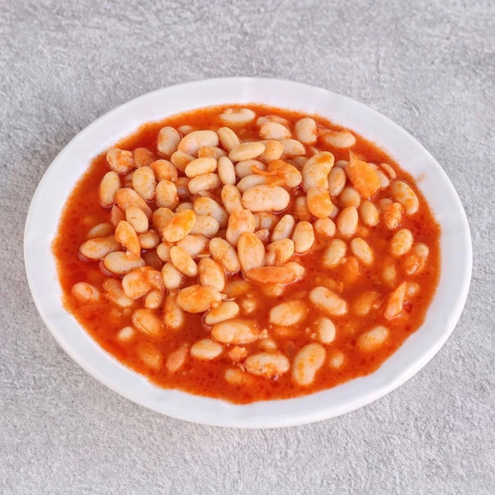
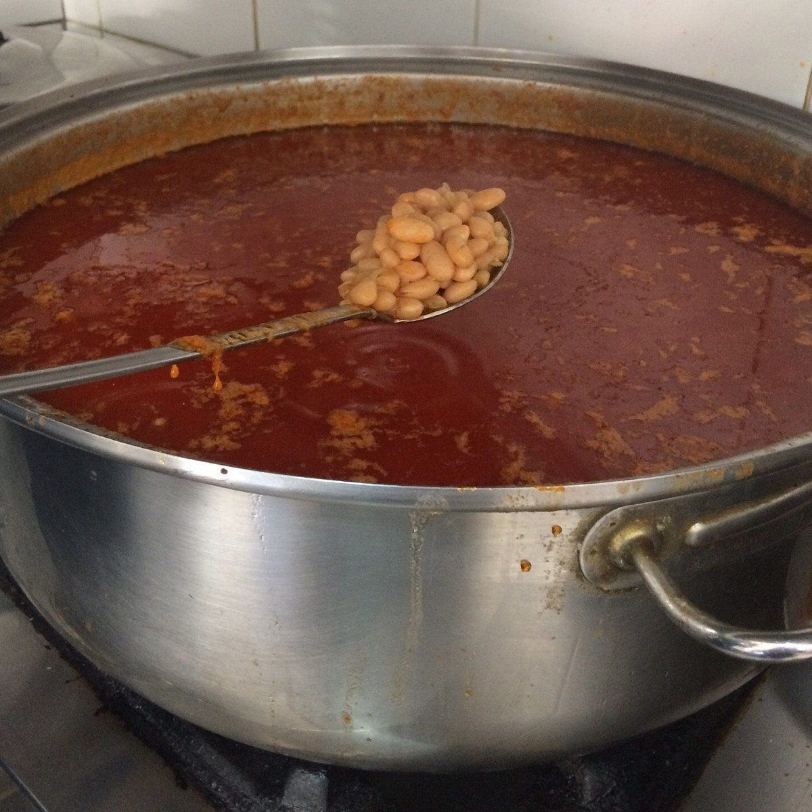
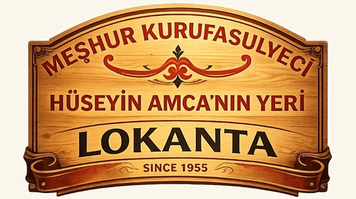
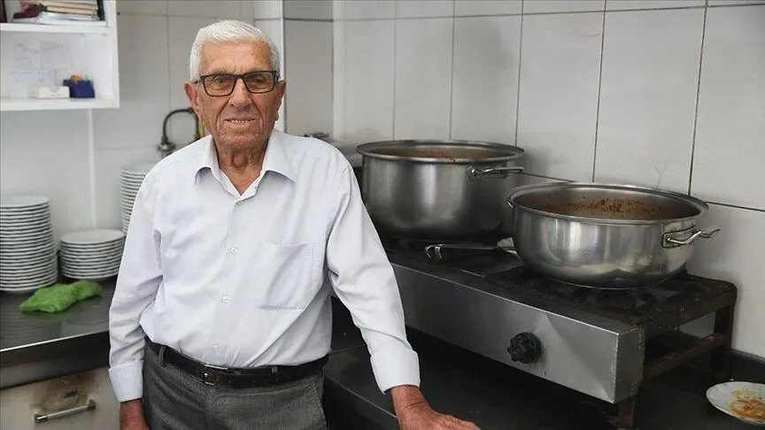
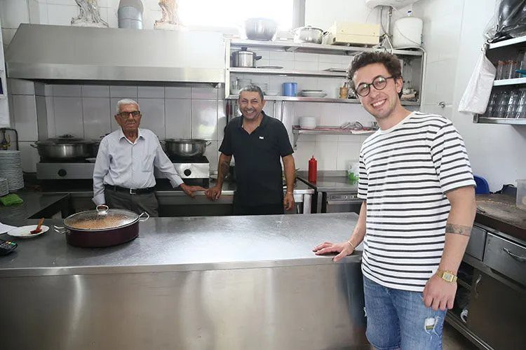

Kuru Fasulye
1955'ten beri aynı tarif. Kısık ateşte, sabırla pişer.
Hüseyin Uysal'ın Ortakent'te açtığı lokantadayız. Fasulye kısık ateşte pişer, turşu burada kurulur, her şey her sabah taze hazırlanır. 70 yıldır böyle.

"Kazan kaynar, mahalle doyar."

Hüseyin Amca bu lokantayı 1955'te açtı: piliç, fasulye, bir de kendi turşusu. Mutfağı sonra, yıllarını gemi aşçılığında geçirmiş oğlu devraldı; bugün torunu da işin başında. Tarif dededen, kural aynı: usta onaylamadan tencere servise çıkmaz.


Buradan ekmek yedim, onun için bırakamıyorum. Dükkâna günde iki üç defa gidiyorum. Yemekleri kontrol etmediğim zaman içim rahat etmiyor.Hüseyin Uysal Kurucumuz. 105 yaşında, hâlâ her gün lokantada.
Ortakent'te küçük bir dükkân: piliç, fasulye, el turşusu.
Bodrum kalabalıklaştı; belediye yanındaki bugünkü yerimize geçtik.
Mutfak, yıllarca gemilerde aşçılık yapan oğluna geçti. Tarife dokunulmadı.
Usta günde iki üç kez gelir, tencerelerin kapağını tek tek açar. İçine sinmeyen tencere masaya çıkmaz.
Zaman zaman basında da yer alıyoruz. Birkaçı burada.
"Kuru fasulyeci 97 yaşındaki 'Hüseyin Amca' 65 yıldır tezgâhından ayrılamıyor"
Haberi oku GZT JurnalistJurnalist ekibi Hüseyin Usta'yı mutfağında görüntüledi; bir günü video haberde.
Videoyu izle Bodrum GündemOrtakent'in kuru fasulyecisi yerel gündemde; haber Bodrum basınında da yer buldu.
Haberi okuMeşhur Kuru Fasulyeci Hüseyin Amca'nın Yeri
Müskebi Mah. Cumhuriyet Cad. No:110
Ortakent — Belediye binası yanı
48400 Bodrum / Muğla
Sabah 09.00'da açılır; yemekler bitince kapanır.
Öğlen saatleri en yoğun ve en taze zamandır.
Günün menüsü, paket servis ve rezervasyon için bize WhatsApp'tan ulaşın:
+90 507 650 28 33Sabit hat: 0252 358 21 29
WhatsApp'tan Yaz